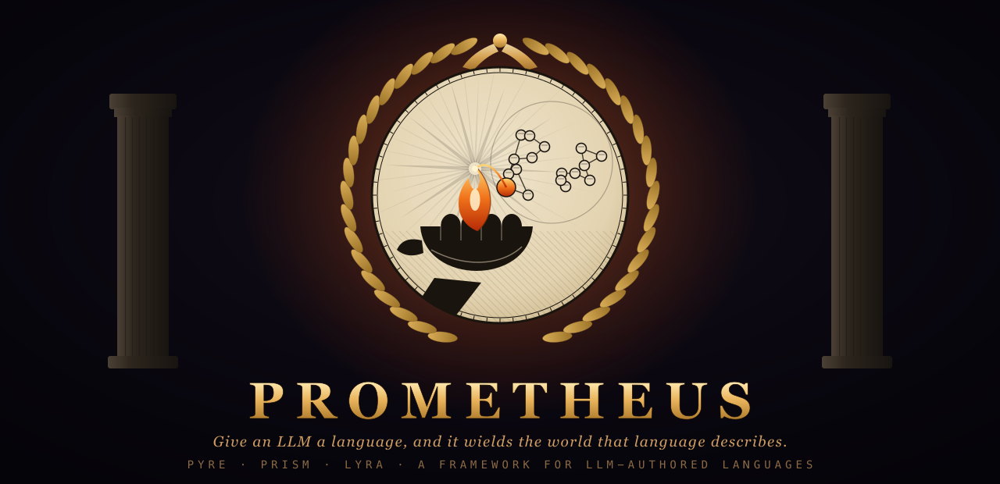
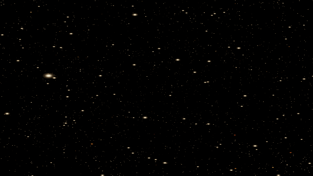
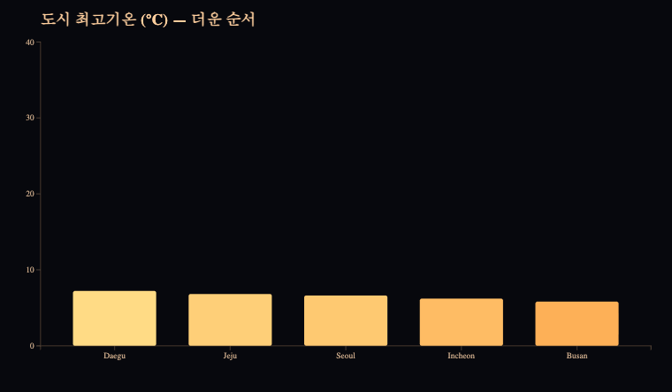
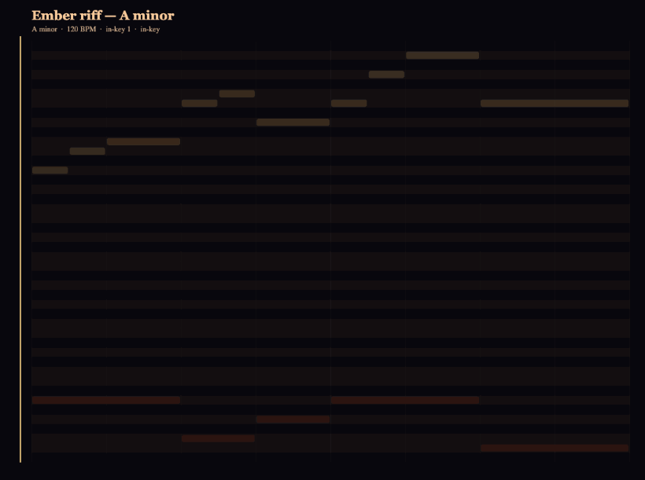

An LLM is a language engine. So to give it a new ability, don't retrain it — hand it a small language for a domain, a deterministic engine that turns that language into effect, and a critic that tells good from bad. Every capability is the same four slots, so one critic loop drives any medium.
Click any card to run it in your browser. Same loop authored all three.

Photo → a drone-show point cloud that scatters and assembles into the image. Critic scores legibility.

Data → an animated chart. Critic gate = encoding fidelity: a chart that lies about the data fails.

Text → music. Critic gate = in-key ratio: a melody that leaves its key fails. Press ▶ for sound.
bin/prometheus-new lyra music stamps a new capability from a template.
Fill the four slots, and the universal loop already drives it. Read the
contract.